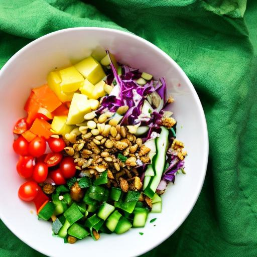

Rainbow Crunch Salad with Zesty Lemon-Tahini Dressing

Description
Experience the sensational Rainbow Crunch Salad with Zesty Lemon-Tahini
Dressing—a symphony of vibrant colors, textures, and flavors that
harmoniously tantalize your palate and nourish your body. Nestled on a bed
of mixed greens, including spinach, kale, and arugula, a delightful array
of sensations awaits. Succulent cherry tomatoes burst with sweetness,
complemented by the crispness of diced cucumber. Slices of bell peppers in
red, yellow, and green add a visual pop, while shredded purple cabbage and
grated carrots bring their vibrant hues to the ensemble. Revel in the
satisfying crunch of roasted chickpeas and sunflower seeds, adding an
extra layer of texture. The crowning glory is the zesty lemon-tahini
dressing, crafted from creamy tahini, tangy lemon juice, and a whisper of
garlic, drizzled generously over the salad. Indulge in this sensory
delight, where every bite offers a fusion of flavors that celebrate the
natural beauty and goodness of plant-based ingredients.
Ingredients
-
Ingredients:
- 2 cups mixed greens (spinach, kale, and arugula)
- 1/2 cup cherry tomatoes, halved
- 1/2 cup cucumber, diced
- 1/2 cup bell peppers (red, yellow, and green), thinly sliced
- 1/4 cup shredded purple cabbage
- 1/4 cup grated carrots
- 1/4 cup roasted chickpeas
- 2 tablespoons sunflower seeds
- 2 tablespoons chopped fresh cilantro
-
Zesty Lemon-Tahini Dressing Ingredients:
- 2 tablespoons tahini
- Juice of 1 lemon
- 2 tablespoons extra-virgin olive oil
- 1 tablespoon maple syrup
- 1 clove garlic, minced
- 1/2 teaspoon ground cumin
- Salt and pepper to taste
- Water (as needed to thin out the dressing)
Steps
-
In a large salad bowl, combine the mixed greens, cherry tomatoes,
cucumber, bell peppers, purple cabbage, grated carrots, roasted
chickpeas, sunflower seeds, and fresh cilantro.
- Prepare the Zesty Lemon-Tahini Dressing:
-
In a small bowl, whisk together 2 tablespoons of tahini, the juice of
1 lemon, 2 tablespoons of extra-virgin olive oil, 1 tablespoon of
maple syrup, 1 minced clove of garlic, 1/2 teaspoon of ground cumin,
and salt and pepper to taste.
-
If the dressing is too thick, gradually add water until desired
consistency is reached.
- Drizzle the Zesty Lemon-Tahini Dressing over the salad.
- Toss well to coat all the ingredients.
- Serve immediately and enjoy!